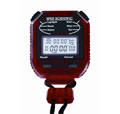
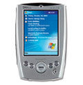
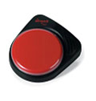
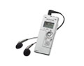
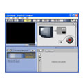

Resources
If you would like information on training with any equipment or software the OML has, please contact our coordinator.
Check-out Guidelines for Equipment
- Write your x500 and initials under the date you are checking out the item.
- Draw a line through the days you are planning to keep the item.
- When you return the item, write your initials again on the day you return it.
Note: If you need a camera in use by
someone else, use their x500 to e-mail them
to coordinate use.
If you give an item to someone else, the new user is responsible for
updating the calendar with new x500 and initials.
Check-out guidelines can also be located on individual equipment binders.
Resources - Equipment
Digital Video Cameras
- 2 Panasonic hard disk cameras
- 7 cameras supporting mini-DV, Hi8, and VHS-C tapes
- Each camera is equipped with an extra battery & charger
- Plextor converter and necessary cables for capturing and converting video on computer
- Several tripods also available

Stopwatches
- 9 digital stopwatches and small earphones
- Capable of interval countdown repeat
- Earphone jack for indicator sounds

Handheld Devices
- 2 Dell Axim X5 Pocket PCs
- 2 large keyboard attachments

Communication Devices
- 1 BIGMack Communicator

Miscellaneous
- Olympus digital voice recorder
- Cassette players
Resources - Software
MOOSES observation software
- Collection and analysis of data obtained from observing processes and/or subjects
- Frequency and duration, inter-observer agreement, multigroup frequency and duration, sequential analyses
Procoder DV
- Track, find, and replay events on digital video or audio files
- Data saved in transcriptions and marked events

WinDVD Creator
- Capture and edit video
- Output video or burn it to disc
GSEQ sequential analysis program
- Sequential statistics
- Data modification, can export for further analyses
Note: For information on other programs, both commercial and freeware, see the Related Links section of this website.